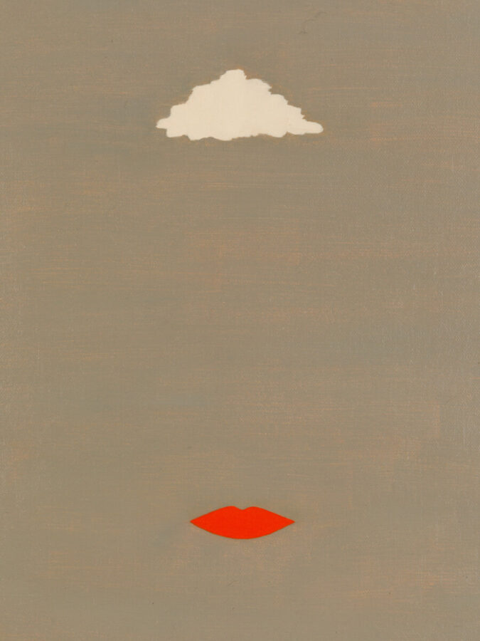

a person chosen, named, or honored…
In commemoration of PATRON’s 10th anniversary, the gallery is proud to announce a group exhibition, a person chosen, named, or honored..titled after the Webster’s Dictionary definition of a “patron.”
Scheduled from January 24, 2026 – March 7, 2026 at our Chicago Avenue location, the exhibition celebrates the collector/artist/gallery relationships which have been formative for the growth and prosperity of the gallery, and reflective of the strength and vibrancy of the Chicago arts community at large. Uniting key artworks acquired from PATRON over the past ten years, the exhibition is intended to acknowledge the growth of individual artist’s practices, and act as a time capsule of the exhibitions, projects, and conversations that marked the last decade. We write to you as an essential part of our history, our present, and our future.
Artists
Lindsay Adams
Daniel G. Baird
Greg Breda
Kadar Brock
Alex Chitty